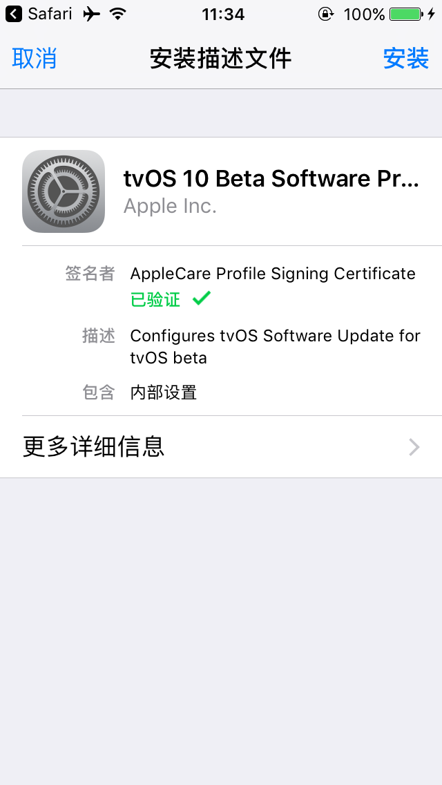
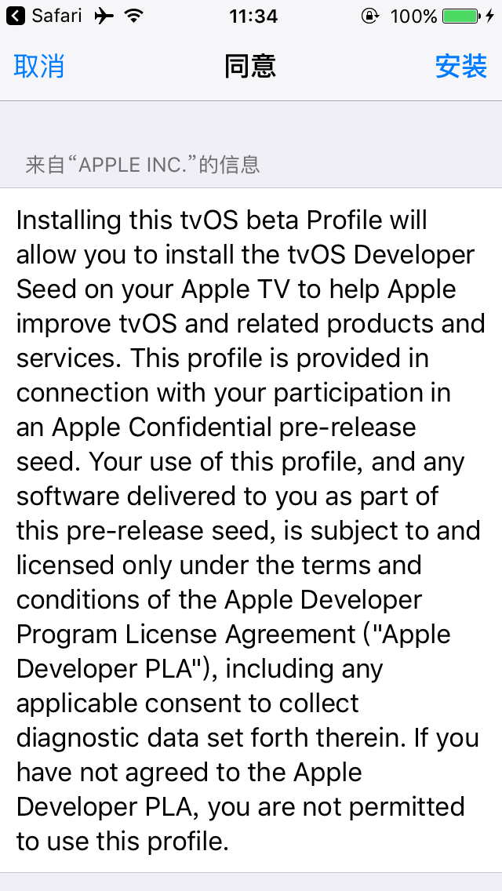
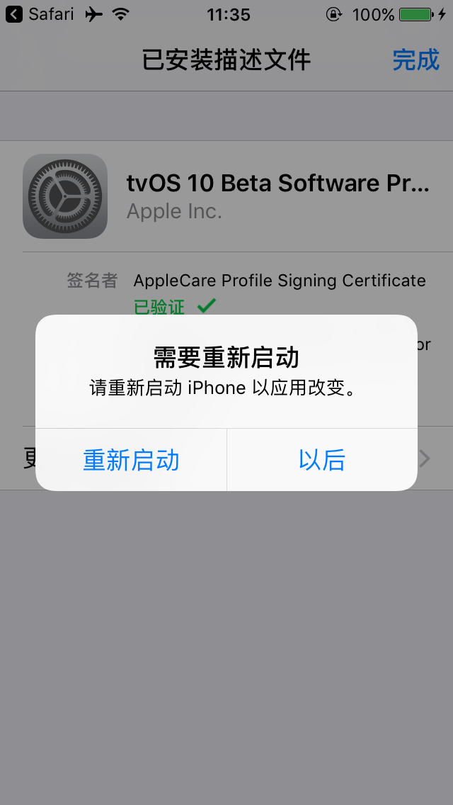
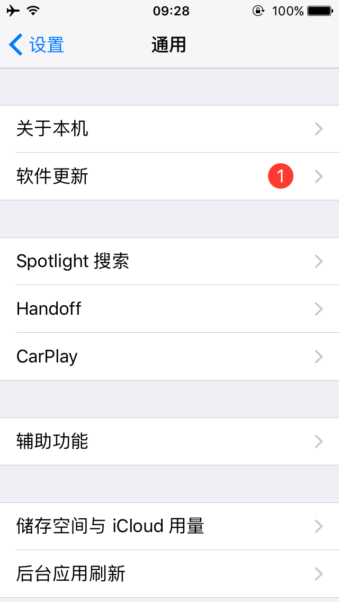
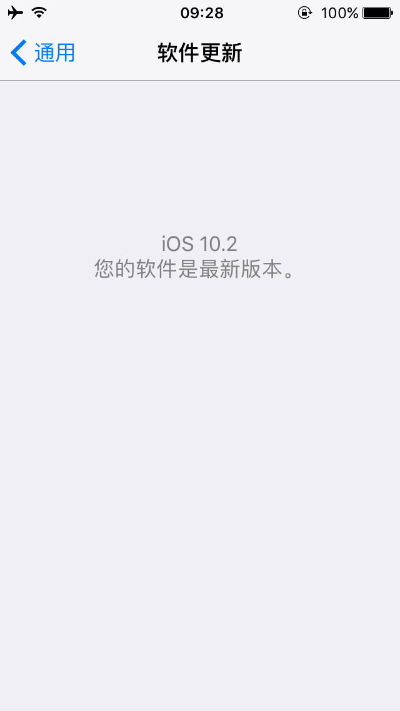

前言
我们都知道，iPhone 会在 WIFI 环境下自动下载更新系统包，并提示用户进行 OTA 固件升级。强迫症患者看到那个红色的气泡提示，就想消掉它，然后就手贱升级了，或者点了“今晚更新”，然后第二天早上就发现已经自动升级了。升到新版本一般就回不来了，如果版本不好用就进坑了。而对于越狱用户来说，如果升级了一般就不能越狱了，比如现在 iOS 10.2 能越狱，如果升级到 10.2.1，就不能越狱了，对于越狱开发的人员来说就失去了开发工具，屏蔽 iPhone 自动更新非常重要。
屏蔽
在 iPhone Safari 上打开 NOOTA9.mobileconfig，安装描述文件。


安装完毕重启即可。

重启完毕后再来到设置，虽然可以看到仍然有个提示的气泡，但点击进入的时候已经不能更新了。


后话
不升级并不会导致什么可怕的后果，反而对某些人来说是非常重要的。如果某天有需求就是要升级，想要恢复回去，直接到设置中找到这个描述文件并删除即可。
对了，这个气泡看着还是太不舒服了，强迫症患者应该会有个需求，我会再尝试把这个红色的气泡去掉。